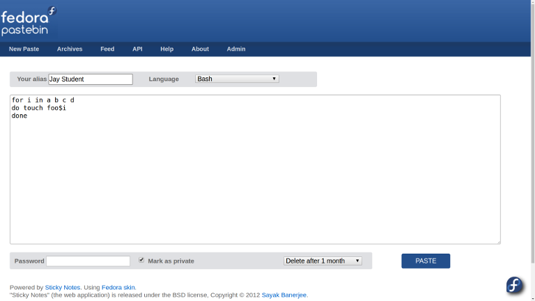

Your First Bash Shell Script
Table of Contents
1 Overview
The Linux shell has a powerful scripting language. Any command you can run at the prompt you can put into a script to automate it for later use.
2 Assignment Objectives
When you have successfully completed this assignment you will be able to:
- Lists the parts of a shell script.
- Explain the function of the Shebang line.
- Create a simple shell script.
- Make the script executable.
- Use a pastebin to submit code.
3 Preparation
Create a new directory in your home directory for the scripts you create.
$ mkdir ~/bin cd bin
If the directory isn't part of your PATH you can add it temporary with this command. Adding the directory to your PATH let's the shell run the script directly without the need to enter the full path.
$ PATH=$PATH:/home/tux/bin
4 Variables
4.1 The SHELL Environmental Variable
A Linux user has several shells to choose from. On most Linux systems the default shell is bash – The Bourne Again SHell. The SHELL environmental variable determines the default shell for an account.
$ echo $SHELL /bin/bash
System accounts will have /bin/false or /bin/nologin as a default since there are never used to log into the system, Here is an example from /etc/passwd for the Pulse sound system.
pulse:x:110:119:PulseAudio daemon,,,:/var/run/pulse:/bin/false
4.2 Using Variables in a Script
Variables are useful in scripts and help to make them more readable. System environmental variables are all CAPS. Variables you create should be lower case or CamelCaps. Spaces can't be used in variable names but can be used for the variable value is surrounded by quotes,
This example returns the home directory for the user you are logged in as.
echo "You are logged as $USER and your home directory is $HOME." You are logged as tux and your home directory is /home/tux.
The env command lists environmental variables.
4.2.1 Custom Variables
You can create your own variables.
pet=hamster
And use them in your scripts.
echo "My favorite pet is my $pet." My favorite pet is my hamster.
5 The Shebang Line
Every script should start with a shebang line that tells the shell what kind of script it is. The most common shebang line is #!/bin/bash. However a more portable shebang line is #!/bin/env bash. The latter does not depend on bash being in /bin.
#!/bin/bash /bin/pwd
6 Comments
Every script should be well commented. Scripts grow over time, change hands and the original programmer either forgets what the script does or can no longer be found. The comment character for bash is the pound or hash-tag (#) sign.
#!/usr/bin/env bash # Prints current directoryg /bin/pwd
7 Running the Script
Save the script with a meaningful name and optionally the .sh extension. The extension will identify the file as a script and most text editors will then apply the correct syntax highlighting when you open the script for editing.
Make the script executable and run it directly from the shell.
$ chmod +x myscript.sh $ ./myscript.sh
8 Testing the Script
You can run the script as an argument to bash which can be helpful when you need to debug the script. Here the -xv option prints what the script actually does line by line.
$ bash -xv test.sh #!/bin/bash pet=hamster + pet=hamster echo "My favorite pet is my $pet." + echo 'My favorite pet is my hamster.' My favorite pet is my hamster.
The online site ShellCheck can also be used to check the syntax of your code.
9 What to Submit
For this assignment you will be using the Fedora Pastebin. A pastebin is a convenient place to share code and avoid the code from being mangled by a submission textbox that sanitizes the input.
9.1 How to Use the Pastebin

- Submit your script at Fedora Pastebin.
- Enter your name under Your alias and select Bash as the language.
- Do not assign a password.
- Click PASTE and copy the shortened URL.
- You will submit the URL to complete the assignment.
10 What to Submit
Create a bash shell script the prints a line similar to this to Standard Output. The bold items must be generated by the script from information available on your system.
"You are logged into xps13 which has been up 2 weeks, 1 day, 12 minutes and these users are logged in: dennisk dennisk dennisk.
Post your script to the Fedora Pastebin and submit the shortened URL you receive.